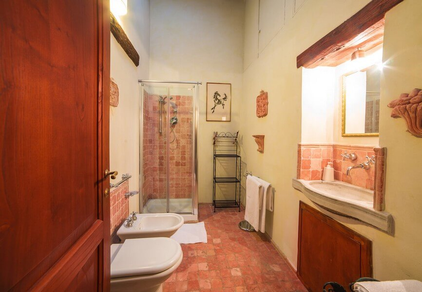
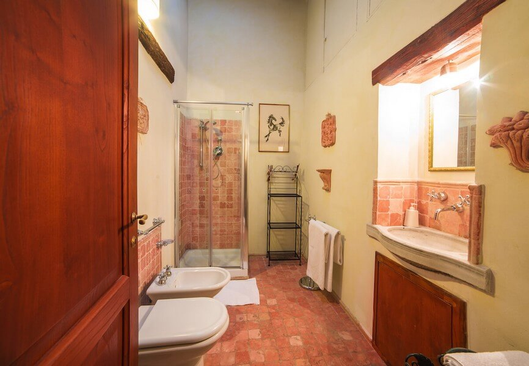

LUXURY
 

Nel casale disponiamo di un grande appartamento con 6 posti letto (fino a 7 posti con maggiorazione) recentemente ristrutturato, spazioso, luminoso e con finiture di pregio e tappeti preziosi. A disposizione degli ospiti ci sono due terrazze: la prima dà accesso diretto alla piscina privata, la seconda domina il giardino e l'uliveto e offre un panorama unico su tutta la Valle, fino ad Assisi e al Monte Subasio.
L’appartamento é composto da salone con salotto, sala da pranzo, cucina, camera matrimoniale con bagno, camera matrimoniale soppalcata con bagno e due letti.
La collocazione della casa è molto panoramica e sovrasta la piscina e il parco. A poche decine di metri la palestra, il campo da badminton e l’area panoramica con vista su Assisi e Monte Subasio. La vista scende alla Valle Umbra e alla Basilica di Santa Maria degli Angeli per risalire a sinistra verso Bettona, Torgiano e Perugia; a destra verso Spello, Foligno e Montefalco. Dietro a noi i boscosi Monti Martani, Todi, Spoleto e Deruta.
La cucina è completamente attrezzata con forno, forno a microonde, lavastoviglie e lavatrice, il televisore a schermo piatto è satellitare, il Wi-Fi gratuito, aria condizionata nelle camere e ventilatori a soffitto in ogni locale. La biancheria da bagno e le lenzuola vengono cambiate ogni 7 giorni di permanenza o a richiesta del cliente. Nelle ore pomeridiane sono a disposizione degli ospiti l’angolo lavanderia e la stireria. Gli appartamenti sono dotati di asciugacapelli. L’acqua del rubinetto è potabile e di buona qualità.
La prima colazione non è servita poichè gli appartamenti sono completamente autonomi ed indipendenti. All’arrivo gli ospiti troveranno un cesto di benvenuto con prodotti da forno tipici locali e quanto serve per una prima colazione italiana.
Non c’è ristorante: una scelta ragionata perchè i nostri ospiti possano organizzare un soggiorno vario anche nella soddisfazione del gusto, sperimentando diversi ristoranti e le trattorie tipiche del luogo presso i quali sapremo indirizzarli con competenza.
Prezzi Appartamento Luxury
6 posti letto, permanenza minima 3 notti:
- 3 notti 510€
- 1 settimana (7 notti) 1155€
- 1 mese (30 notti) 3900€
FESTIVITA’ NATALIZIE E CAPODANNO: 250,00€/notte.
Nei mesi di Luglio e Agosto preferiamo prenotazioni minime di una settimana.
Tutti i prezzi, validi per un massimo di 6 ospiti, sono comprensivi del nostro cesto di benvenuto con prodotti tipici per la prima colazione.
Letto aggiunto/divano letto: + 10€/notte/letto.